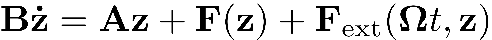
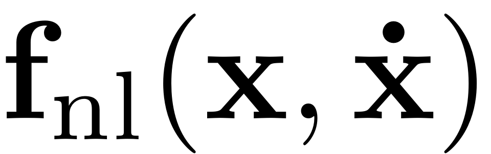
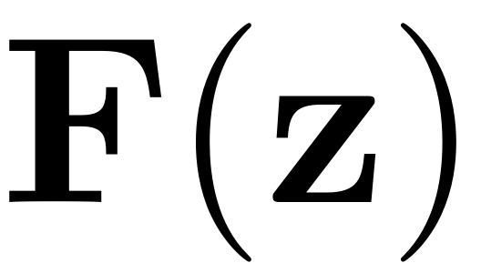

Dynamical System Class
Contents
classdef DynamicalSystem < matlab.mixin.SetGetExactNames
Dynamical System
The DynamicalSystem class contains a dynamical system object in first order

or second order form
Here  is a polynomial function of degree two or higher, which is stored as a cell array such that fnl{k} corresponds to polynomials of degree k+1. fnl{k} is given by a tensor of order k+2, where the first mode corresponds to indices for the force vector. Likewise,  is a polynomial function of degree two or higher. F is stored as a cell array, where the i-th entry gives the tensor/multiindex representation of polynomials of degree i.
The second order form is converted into the first order form with
![$$ \mathbf{z}=\left[\begin{array}{c} \mathbf{x} \\ \mathbf{\dot{x}}\end{array}\right], \quad \mathbf{B} = \left[\begin{array}{c}\mathbf{C} \quad \mathbf{M} \\ \mathbf{M} \quad \mathbf{0} \end{array}\right],
\quad \mathbf A = \left[\begin{array}{c}-\mathbf K \quad \mathbf 0
\\ \mathbf 0 \quad \mathbf M \end{array}\right], \quad
\mathbf{F}(\mathbf{z}) = \left[\begin{array}{c} - {\mathbf{f}}_{\textrm{nl}} (\mathbf{x},\dot{\mathbf
{x}}) \\ \mathbf{0}\end{array}\right], \quad
\mathbf F_{\textrm{ext}}(\mathbf \Omega t, \mathbf{z}) = \left[\begin{array}{c} \mathbf{f}_{\textrm{ext}}(t) \\ \mathbf 0 \end{array}\right] $$](DynamicalSystem_eq12001005387837510971-Rescaled.png)
All of these quantities and their characteristic are encoded in the following variables.
Properties
properties
M = [] % Mass matrix
C = [] % Damping matrix
K = [] % Stiffness matrix
A = [] % First order system matrix
B = [] % First order system matrix
BinvA % precomputed matrix for efficiency
fnl = [] % second order system nonlinearity
F = [] % first order system nonlinearity
fext = [] % second order system external excitation
Fext = [] % first order system external excitation
Omega = [] % forcing frequency
n % dimension for x
N % dimension for z
order = 2; % whether second-order or first-order system
degree % degree of (polynomial) nonlinearity of the rhs of the dynamical system
nKappa % Fourier Series expansion order for Fext
kappas = [] % matrix with all kappas in its rows
spectrum = [] % data structure constructed by linear_spectral_analysis method
Options = DSOptions() % Options that can be set for the dynamical system object.
end
methods
SET methods
function set.A(obj,A) obj.A = A; set(obj,'order',1); % since second-order system is assumed by default end function set.fnl(obj,fnl) % sets nonlinearity in second order form in multi-index format if iscell(fnl) % Input is sptensor % sets nonlinearity in second order form in multi-index format obj.fnl = set_fnl(fnl); else % Already in multi-index notation obj.fnl = fnl; end end
GET methods
function A = get.A(obj) if obj.order ==1 A = obj.A; elseif obj.order == 2 A = [-obj.K, sparse(obj.n,obj.n); sparse(obj.n,obj.n), obj.M]; end end function B = get.B(obj) if obj.order ==1 if isempty(obj.B) B = speye(obj.N,obj.N); else B = obj.B; end elseif obj.order == 2 B = [obj.C, obj.M; obj.M, sparse(obj.n,obj.n)]; end end function BinvA = get.BinvA(obj) BinvA = [sparse(obj.n,obj.n), speye(obj.n,obj.n) -obj.M\obj.K, -obj.M\obj.C]; end function F = get.F(obj) switch obj.Options.notation %%%%%%%%%%%%%%%%%%%%%%%%%%%%%%%%%%%%%%% % Computation in tensor format %% % nonlinearity is input as tensor %% %%%%%%%%%%%%%%%%%%%%%%%%%%%%%%%%%%%%%%% case 'tensor' if obj.order == 1 if ~isempty(obj.F) F = obj.F; elseif ~isempty(obj.fnl) % In this case, the DS is input to be first order, but % the nonlinearity is given in second order format. % See for instance example BenchmarkSSM1stOrder F = fnl_to_Ftens(obj); else F = []; end else F = fnl_to_Ftens(obj); end %%%%%%%%%%%%%%%%%%%%%%%%%%%%%%%%%%%%%%%%%%% % Computation in multiindex format %% % nonlinearity is input in multiindex %% % or converted to it from tensor %% %%%%%%%%%%%%%%%%%%%%%%%%%%%%%%%%%%%%%%%%%%% case 'multiindex' if obj.order == 1 if ~isempty(obj.F) F = obj.F; elseif ~isempty(obj.fnl) % In this case, the DS is input to be first order, but % the nonlinearity is given in second order format. F = fnl_to_Fmulti(obj); else F = []; end else % Second order dynamical system was provided F = fnl_to_Fmulti(obj); end otherwise error('The option should be tensor or multiindex.'); end end function n = get.n(obj) n = length(obj.M); end function N = get.N(obj) N = length(obj.A); end function nKappa = get.nKappa(obj) nKappa = numel(obj.Fext.data); end function kappas = get.kappas(obj) % kappas stored in rows sz_kappa = size(obj.Fext.data(1).kappa,2); kappas = reshape([obj.Fext.data.kappa],sz_kappa,[]).'; end function Fext = get.Fext(obj) if obj.order ==1 Fext = obj.Fext; elseif obj.order == 2 Fext.data = set_Fext(obj); Fext.epsilon = obj.fext.epsilon; end end function degree = get.degree(obj) degree = 0; if ~isempty(obj.A) degree = length(obj.F); end end
other methods
add_forcing(obj,f,varargin) [V, D, W] = linear_spectral_analysis(obj) fext = compute_fext(obj,t,x,xd) Fext = evaluate_Fext(obj,t,z) fnl = compute_fnl(obj,x,xd) dfnl = compute_dfnldx(obj,x,xd) dfnl = compute_dfnldxd(obj,x,xd) Fnl = evaluate_Fnl(obj,z) f = odefun(obj,t,z) [r, drdqdd,drdqd,drdq, c0] = residual(obj, q, qd, qdd, t)
end
end
Internal functions
function [F] = fnl_to_Ftens(obj) % Convert nonlinearity to tensor format. d = length(obj.fnl) + 1; F = cell(1,d); F{1} = sptensor(obj.A); for j = 2:d sizej = obj.N*ones(1,j+1); if isempty(obj.fnl(j-1)) || isempty(obj.fnl(j-1).coeffs) F{j} = sptensor(sizej); else [fnl_t] = multi_index_to_tensor(obj.fnl(j-1).coeffs,obj.fnl(j-1).ind); subsj = fnl_t.subs; valsj = -fnl_t.vals; if obj.order==1 valsj = -valsj; end F{j} = sptensor(subsj,valsj,sizej); end end end function [F] = fnl_to_Fmulti(obj) % Convert nonlinearity to multi-index format d = length(obj.fnl) + 1; F = repmat(struct('coeffs',[],'ind',[]),1,d); for j = 2:d if isempty(obj.fnl(j-1)) F(j) = []; % see in bernoulli beam elseif size(obj.fnl(j-1).coeffs,1) == obj.N %fnl already 1st order form F(j).coeffs = obj.fnl(j-1).coeffs; F(j).ind = obj.fnl(j-1).ind; else % conversion to 1st order form F(j).coeffs = [-obj.fnl(j-1).coeffs;... sparse(obj.n, size(obj.fnl(j-1).coeffs,2)) ]; if obj.n == size(obj.fnl(j-1).ind,2) % No nonlinear damping F(j).ind = [obj.fnl(j-1).ind.';... sparse(obj.n, size(obj.fnl(j-1).ind,1)) ].'; else %Nonlinear damping F(j).ind = obj.fnl(j-1).ind; end end end end function [fnl_multi] = set_fnl(fnlTensor) % Sets second order nonlinear force in multi-index format d = length(fnlTensor) + 1; fnl_multi = repmat(struct('coeffs',[],'ind',[]),1,d-1); for j = 2:d if isempty(fnlTensor{j-1}) || nnz(fnlTensor{j-1}) == 0 else sizej = fnlTensor{j-1}.size; subsj = fnlTensor{j-1}.subs; valsj = fnlTensor{j-1}.vals; tmp = tensor_to_multi_index(sptensor(subsj,valsj,sizej)); fnl_multi(j-1).coeffs = tmp.coeffs; fnl_multi(j-1).ind = tmp.ind; end end end function [data] = set_Fext(obj) % Creates the data struct from the input second order force % Structs for storing the coefficients F_n_k = repmat(struct('coeffs',[],'ind',[]),numel(obj.fext.data(1).f_n_k),1); data = repmat(struct('kappa',[],'F_n_k',[]),numel(obj.fext.data),1); % Fill the structs for i = 1:numel(obj.fext.data) for j = 1:numel(obj.fext.data(i).f_n_k) F_n_k(j).coeffs = [obj.fext.data(i).f_n_k(j).coeffs;... sparse(obj.n, size(obj.fext.data(i).f_n_k(j).coeffs,2)) ]; if size(obj.fext.data(i).f_n_k(j).ind,2) == obj.n F_n_k(j).ind = [obj.fext.data(i).f_n_k(j).ind.';... sparse(obj.n, size(obj.fext.data(i).f_n_k(j).ind,1)) ].'; elseif size(obj.fext.data(i).f_n_k(j).ind,2) == obj.N F_n_k(j).ind = obj.fext.data(i).f_n_k(j).ind; elseif size(obj.fext.data(i).f_n_k(j).ind,2) > 0 error('Wrong dimensionality of external force ') end end data(i).F_n_k = F_n_k; data(i).kappa = obj.fext.data(i).kappa; end end